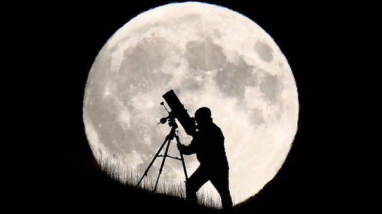
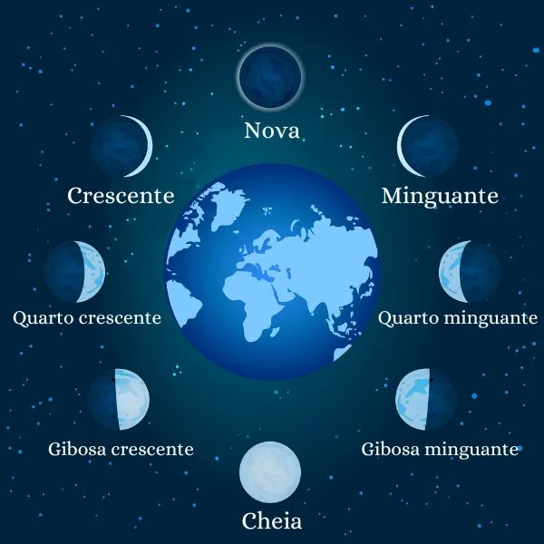
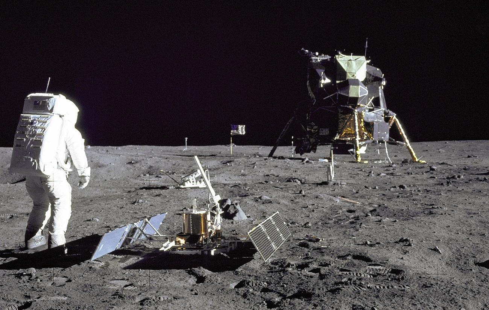
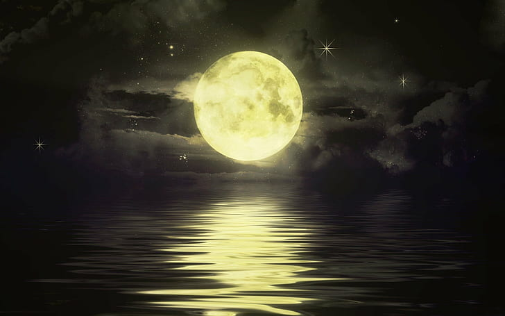

Lua
O Satélite Natural Terrestre
Nossa lua, a companheira silenciosa da Terra, tem fascinado a humanidade ao longo da história. A Lua é o quinto maior satélite natural do sistema solar, significativamente menor que a Terra. Ela orbita a Terra a uma distância média de cerca de 384.400 quilômetros, viajando a uma velocidade média de cerca de 3.700 quilômetros por hora ao redor de nosso planeta.
História e Observação
A Lua tem uma história rica que remonta aos primórdios da observação astronômica. Desde tempos antigos, a humanidade olha para o céu noturno e vê a lua brilhante e misteriosa pairando acima de nós. A história da observação lunar é uma história de fascinação e exploração. Desde as civilizações antigas até os observadores modernos, a Lua tem sido uma companheira constante para a Terra.
Mas a Lua é mais do que apenas um ponto de referência no céu. Ela tem uma relação simbiótica com a Terra, influenciando as marés oceânicas devido à sua atração gravitacional. Isso não apenas molda as características geográficas da Terra, mas também afeta a vida marinha e os ecossistemas costeiros.
Fases da Lua
Lua Nova: a face iluminada da Lua está voltada para longe da Terra, tornando-a praticamente invisível no céu noturno. Nesse momento, a Lua está alinhada entre a Terra e o Sol. As principais influências da Lua Nova são as marés, pois a atração gravitacional da Lua e do Sol se combinam, resultando em marés altas.
Lua Crescente: à medida que a Lua continua sua órbita, uma fina fatia iluminada começa a aparecer. Essa fase é chamada de Lua Crescente. Ela não tem um impacto tão notável na Terra quanto as fases posteriores, mas é um marco visual no ciclo lunar.
Quarto Crescente: metade da Lua está iluminada, formando uma forma de "D". Durante esta fase, a Lua é visível no céu à tarde e à noite. Suas influências nas marés são menos intensas do que na Lua Nova, mas ainda são notáveis.
Lua Cheia: é a fase em que toda a sua face iluminada é visível da Terra, criando uma visão espetacular no céu noturno. Nesse momento, a Lua está do lado oposto da Terra em relação ao Sol. A Lua Cheia tem o efeito mais pronunciado nas marés, criando marés altas.
Quarto Minguante: esta fase marca o início da diminuição da iluminação lunar visível. Metade da Lua é iluminada, mas na forma de um "C" invertido. Assim como o Quarto Crescente, essa fase tem um impacto menos notável nas marés em comparação com a Lua Cheia.
Lua Minguante: a maior parte da Lua está na sombra, deixando apenas uma fina fatia iluminada. Ela é visível no céu durante a manhã e é a última fase antes de retornar à Lua Nova. As influências nas marés são semelhantes às do Quarto Minguante.
Missões para a Lua
Luna: a União Soviética foi pioneira na exploração lunar com o programa Luna. Em 1959, a Luna 1 se tornou a primeira espaçonave a alcançar a Lua. O programa Luna continuou com várias missões, incluindo o primeiro pouso bem-sucedido na Luna 2 e o envio de sondas que retornaram amostras da superfície lunar.
Programa Apollo: talvez as missões mais icônicas à Lua tenham sido o Programa Apollo da NASA. O Apollo 11, em 1969, viu Neil Armstrong e Buzz Aldrin se tornarem os primeiros humanos a pisar na Lua, com a famosa frase de Armstrong: "Este é um pequeno passo para o homem, um salto gigante para a humanidade". O programa continuou com mais cinco pousos bem-sucedidos na Lua, até o Apollo 17 em 1972.
Luna 2: a União Soviética continuou a explorar a Lua com o Programa Luna, que incluiu missões tripuladas e robóticas. A Luna 24 foi a última missão bem-sucedida do programa, trazendo amostras de solo lunar de volta à Terra em 1976.
Artemis: a NASA está planejando um retorno tripulado à Lua com o programa Artemis. O objetivo é pousar a primeira mulher e o próximo homem na Lua até 2024. Este programa visa estabelecer uma presença sustentável na Lua, usando-a como trampolim para futuras missões tripuladas a Marte.
Curiosidades
Pegadas: as pegadas deixadas pelos astronautas do Programa Apollo na Lua ainda estão lá e provavelmente permanecerão por milhões de anos. Como não há atmosfera ou erosão na Lua, as pegadas não se desgastam.
Rochas: as missões Apollo trouxeram mais de 380 quilogramas de rochas e solo lunar de volta à Terra. Essas amostras continuam sendo uma fonte valiosa de pesquisa científica.
Lado Escuro: embora muitas pessoas se refiram à "lado escuro da Lua," na verdade, a Lua não tem um lado permanentemente escuro. Ela experimenta dias e noites como qualquer outro corpo celeste. No entanto, um lado da Lua está sempre voltado para a Terra devido a uma sincronização chamada "rotação síncrona".
Lua de Mel: Em 1969, o astronauta Buzz Aldrin levou uma pequena ampulheta com ele durante o Apollo 11. Ela continha uma mensagem de amor pessoal, tornando-se uma das primeiras "declarações de amor" na Lua.
